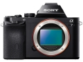

器材库 > 35mm画幅可换镜头数码相机 > α7

规格总览
产品类型
35mm画幅可换镜头数码相机
发布日期
2013-10-16
厂家推荐价格
150,000.00 （日元）
影像规格
影像传感器
Exmor CMOS
影像传感器尺寸
35.8 × 23.9mm
总像素
2470万
有效像素
2430万
影像处理器
BIONZ X
低通滤镜
有
最大解像度
6000 x 4000
静态图像尺寸
[3:2 ]6000 x 4000 (2400 万像素)，APS-C：3936 x 2624 (1000 万像素)，[16:9 ]6000 x 3376 (2000 万像素)，APS-C，大：3936 x 2216 (870 万像素)
静态图像格式
JPEG, RAW, RAW+JPEG
静态图像质量
JPEG 超精细，JPEG 精细，JPEG 标准
画幅比
3:2, 16:9
短片尺寸
AVCHD：1920 x 1080 (60p/28Mbps/PS、60i/24Mbps/FX、60i/17Mbps/FH、24p/24Mbps/FX、24p/17Mbps/FH)
短片格式
MPEG4-AVC/H.264
短片音效
单声道
除尘系统
超声波除尘
镜头和对焦
镜头卡口
Sony E
对焦系统类型
混合自动对焦（相位侦测/对比度检测自动对焦）
对焦点
117点
对焦模式
单次自动对焦(AF-S)、连续自动对焦 (AF-C)、直接手动 (DMF)、手动对焦
手动对焦
支持
曝光控制
测光系统
1200区光评价测光
测光模式
中央重点测光, 多分区评价测光, 点测光
测光范围
0-20EV
曝光模式
P（程序自动曝光）, 场景选择, A（光圈优先自动曝光）, S（快门速度优先自动曝光）, M（手动测光曝光）, iAUTO, 全景扫描, 视频
场景模式
夜景, 人像, 风景, 微距, 运动, 夜间人像, 夜景HDR（JPG格式）
快门类型
电子控制，纵走式，焦平面快门
快门速度
30-1/8000
曝光补偿
±5EV以(1/3 EV 或 1/2 EV )EV级调整
ISO感光度
100, 6400, 可扩展至50-25600
白平衡
日光, 白炽灯, 闪光灯, 色温调节, 自定义, 阴影, 自动, 水下, 荧光灯（冷白色）, 荧光灯（日光白色）, 荧光灯（暖白色）
自拍
2秒
连拍
连拍速度为2.5张/秒，高速连拍为5张/秒
闪光灯
内置闪光灯
无
闪光补偿
-3 至 +1EV
外接闪光灯
Sony α 系统闪光灯
取景器/显示屏
取景器
彩色XGA OLED电子取景器
取景范围
100%
取景放大倍率
0.71倍
屈光度调节范围
-4.0 至 +3.0 m-1
取景器信息
图形化显示、显示所有信息、不显示、长条图、电子水平仪
景深预视
有
LCD类型
TFT LCD
LCD尺寸
3.0英寸
LCD像素
92万
Live View
有
Live View 显示
图形化显示、显示所有信息、不显示、长条图、电子水平仪
文件输入/输出
存储卡
MS/MS PRO记忆棒, SD/SDHC, SDXC
数据接口
Mini USB
视频/音频接口
HDMI Mini 输出
无线功能
Wi-Fi, NFC
电源
电池
锂离子充电电池NP-FW50
续航能力
约270 张 (取景器) / 约340 张 (LCD )
外接电源
AC 变压器 AC-PW20
机身规格
材质
铝合金
颜色
黑色
尺寸
127×94×48mm
重量
416g
Robinzx2014-12-17 15:064.56 分
操作性 4.50功能性 5.00美观性 4.00趣味性 5.00耐用性 4.00性价比 5.00解像力 4.50色彩还原 4.50
abllm2014-11-13 09:584.69 分
操作性 4.50功能性 5.00美观性 4.50趣味性 5.00耐用性 4.50性价比 5.00解像力 4.50色彩还原 4.50
wingszero2014-09-22 09:314.13 分
操作性 3.50功能性 3.50美观性 3.50趣味性 4.50耐用性 4.00性价比 5.00解像力 4.50色彩还原 4.50
hyyz172002014-07-09 06:074.69 分
操作性 4.00功能性 4.50美观性 5.00趣味性 5.00耐用性 5.00性价比 5.00解像力 4.50色彩还原 4.50
茶花败类2014-06-13 11:344.63 分
操作性 5.00功能性 4.00美观性 5.00趣味性 5.00耐用性 5.00性价比 5.00解像力 4.00色彩还原 4.00
laodou1232014-05-15 12:544.38 分
操作性 4.00功能性 4.50美观性 4.00趣味性 4.50耐用性 4.00性价比 5.00解像力 4.50色彩还原 4.50
kanekirk2014-05-14 21:464.31 分
操作性 4.50功能性 4.50美观性 4.00趣味性 4.00耐用性 4.00性价比 4.50解像力 4.50色彩还原 4.50
lbty39692014-05-14 21:38
liqwei2014-05-14 20:044.31 分
操作性 4.50功能性 4.50美观性 4.00趣味性 4.00耐用性 4.00性价比 5.00解像力 4.50色彩还原 4.00
思林2014-05-14 15:534.19 分
操作性 4.00功能性 4.50美观性 3.00趣味性 4.00耐用性 4.00性价比 5.00解像力 4.50色彩还原 4.50
万颗星星的语言2014-05-14 09:454.81 分
操作性 4.50功能性 5.00美观性 4.50趣味性 4.50耐用性 5.00性价比 5.00解像力 5.00色彩还原 5.00
醒目醒目2014-05-13 23:374.56 分
操作性 4.50功能性 5.00美观性 4.50趣味性 5.00耐用性 4.00性价比 4.50解像力 4.50色彩还原 4.50
米诺克思2014-05-04 09:494.56 分
操作性 4.50功能性 4.50美观性 4.50趣味性 5.00耐用性 4.50性价比 4.50解像力 4.50色彩还原 4.50
lostguy2014-04-14 08:134.63 分
操作性 4.50功能性 4.50美观性 4.50趣味性 4.50耐用性 5.00性价比 5.00解像力 4.50色彩还原 4.50
茶当酒2014-03-25 11:03
产品图 / 样片
评测 / 相关文章
- 详细内容 （存档）
- 全画幅搅局者 索尼微单α7详细评测 （存档）
- ［试用］A7、A7R双机双镜跨年晚会拍摄实战体验 （存档）
- ［试用］美能达AF老镜头重获新生 （存档）
- ［试用］索尼全画幅微单A7R/A7的转接应用 （存档）
- ［试用］RX1+A7/135ZA，两个定焦的行走 （存档）
- ［试用］谈谈旁轴镜头转接索尼A7系列全幅微单 （存档）
- ［试用］背包里的婚纱——两个人一台a7自拍婚纱 （存档）
- ［试用］徕卡M50/1.4 E43+A7拍人像 （存档）
- ［试用］a7+nex5n：微单从索尼玩起 （存档）
- ［试用］A7带我第一次感受索尼相机 （存档）
- ［试用］索尼A7转接镜头杂片帖 （存档）
相关文章
- ［试用］A7、A7R双机双镜跨年晚会拍摄实战体验 （存档）
- ［试用］美能达AF老镜头重获新生 （存档）
- ［试用］索尼全画幅微单A7R/A7的转接应用 （存档）
- ［试用］RX1+A7/135ZA，两个定焦的行走 （存档）
- ［试用］谈谈旁轴镜头转接索尼A7系列全幅微单 （存档）
- ［试用］背包里的婚纱——两个人一台a7自拍婚纱 （存档）
- ［试用］徕卡M50/1.4 E43+A7拍人像 （存档）
- ［试用］a7+nex5n：微单从索尼玩起 （存档）
- ［试用］A7带我第一次感受索尼相机 （存档）
- ［试用］索尼A7转接镜头杂片帖 （存档）
- ［试用］徕卡35/1.4A A7试镜 （原站已下线）
- ［试用］用福伦达VM镜头作为A7超广解决方案 （存档）
- ［试用］凝固时间 记录时间 SONY A7转接着用 （原站已下线）
- ［试用］索尼A7和A7R的拍摄机震对比测试 （存档）
- ［试用］FUJI GX680转接SONY A7数码接片改造实战 （原站已下线）
- ［试用］残花夕拾，改镜重生玩A7记录 （原站已下线）
- ［试用］全幅力量 索尼A7用户“主观”教科书 （原站已下线）
- ［试用］索尼微单A7M2点评 （原站已下线）
- ［试用］从A7到A7S，让微单真正＂微＂起来 （原站已下线）